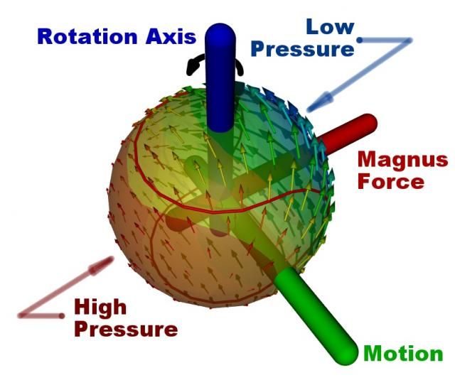

Who hasn't wondered at those magical curve balls that we see in sports such as tennis, soccer, baseball and most impressively in ping pong? Or been disappointed by a horrible slice in a game of golf? Of course, there is no magic, these are just examples of aerodynamics in action – the Magnus effect to be precise.
Magnus Effect on a Spinning Ball Moving in Air


 Get our Blog feed
Get our Blog feed